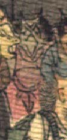

黒っぽい肌の鬼。頭頂に2本角が生え、額に深く皺が寄っている。目は小さく、口はへの字に結んでおり、顔つきは獣のようである。赤い着物を着ている。
著作者：J.Dautremer／出典：親書誌：U426_nichibunken_0123：Le vieillard et les démons／日付：2006／資源識別子：U426_nichibunken_0123_0002_0018
Copyright (c)2010- International Research Center for Japanese Studies, Kyoto, Japan. All rights reserved.